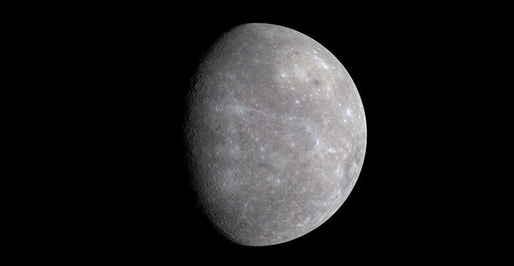
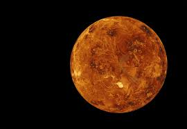
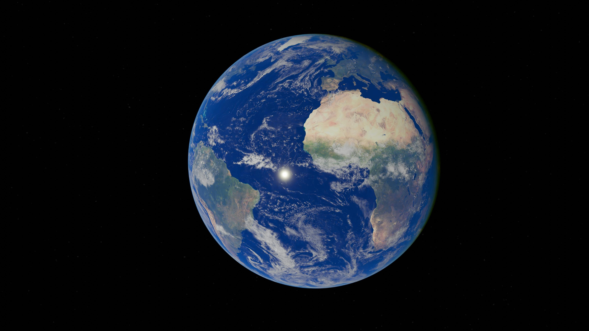
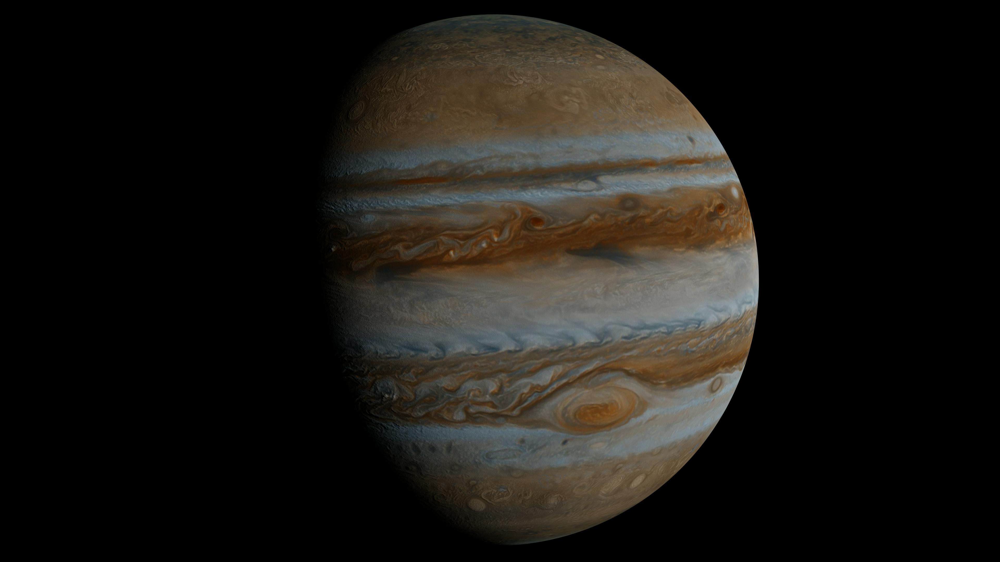
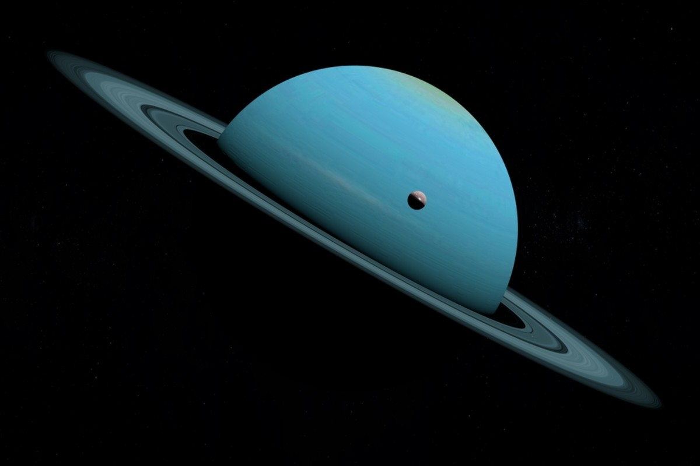
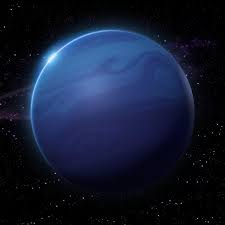

Choose a planet to explore and learn more.
🪐 Mercury

Closest planet to the Sun with extreme temperatures.
🔥 Venus

The hottest planet due to a strong greenhouse effect.
🌍 Earth

The only known planet that supports life.
🔴 Mars

Known as the Red Planet and may have had water.
🌀 Jupiter

The largest planet with a giant storm called the Great Red Spot.
💍 Saturn

Famous for its beautiful rings made of ice and rock.
🧊 Uranus

Rotates on its side and has a cold atmosphere.
🌊 Neptune

The farthest planet with very strong winds.